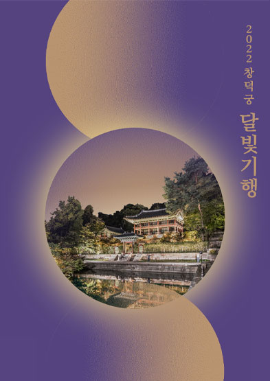
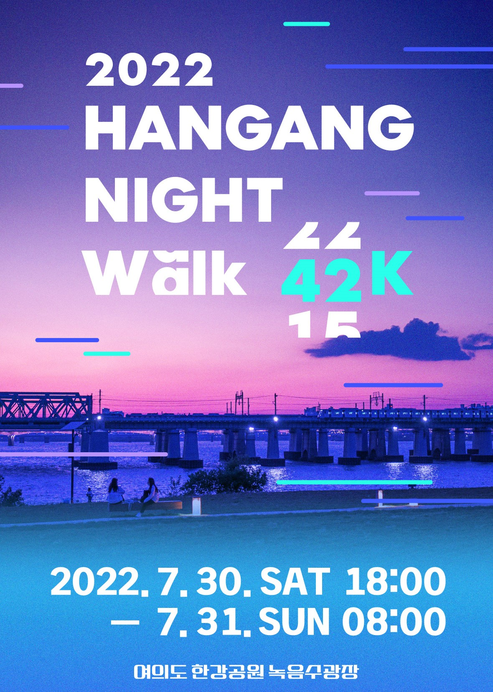
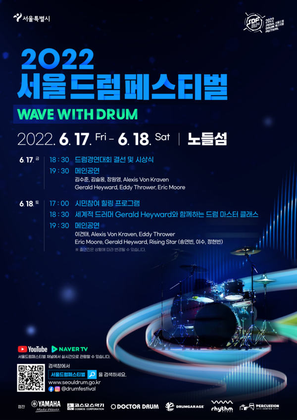
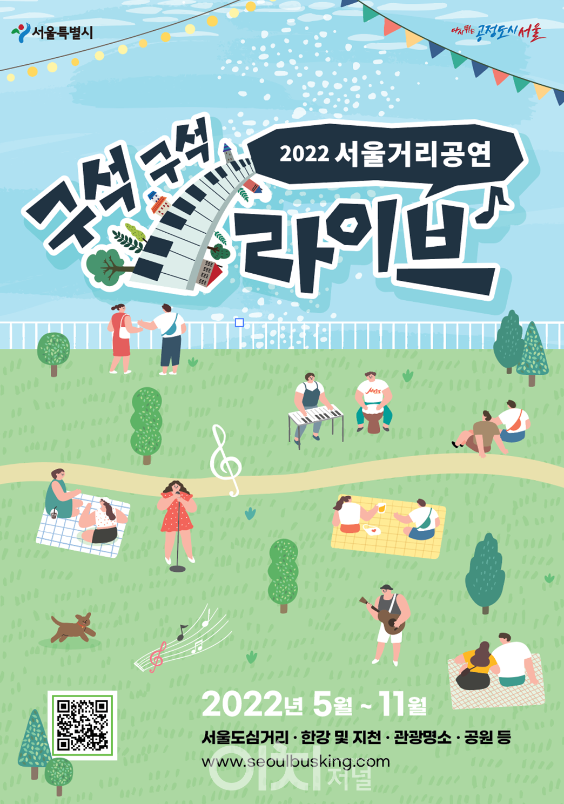
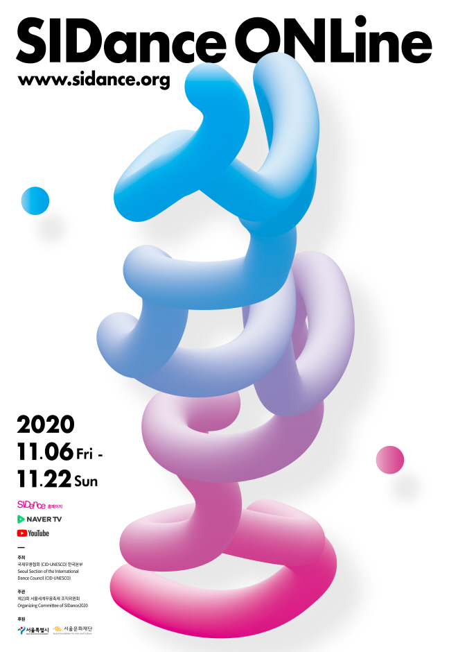
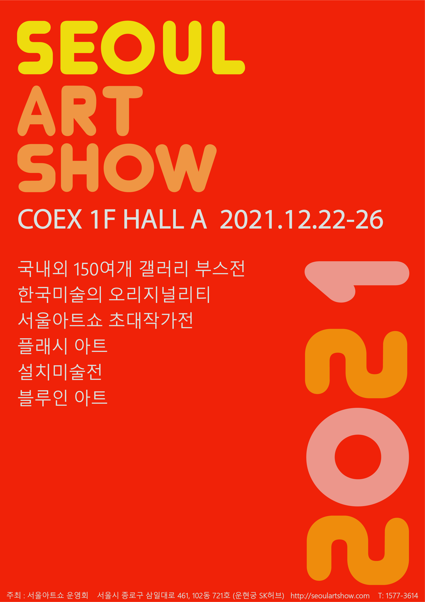
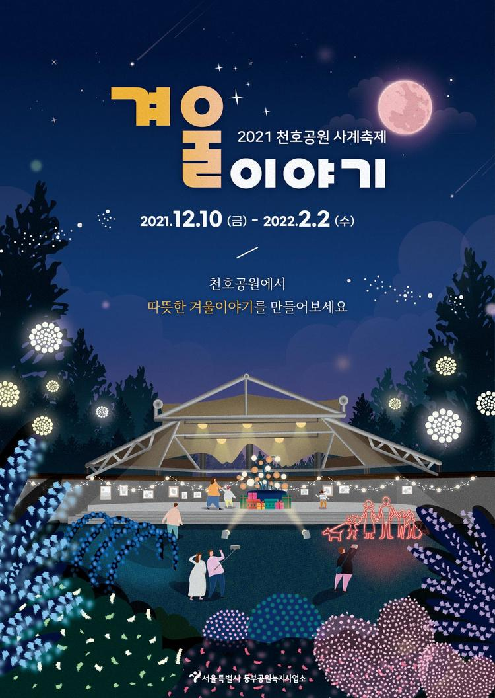

Seasonal Festival
Spring |
||
|---|---|---|
|  |  |
|
달빛기행이 궁금하다면?올해 13년째를 맞는 ｢창덕궁 달빛기행｣은 유네스코 세계문화유산 창덕궁에서 펼쳐지는 대표적인 고품격 문화행사이다. 은은한 달빛 아래 청사초롱으로 길을 밝히며 창덕궁 곳곳의 숨은 옛이야기를 들을 수 있고, 후원을 거닐며 밤이 주는 고궁의 운치를 마음껏 만끽할 수 있다. 기간 : 4.21일 ~ 6.12일(올해 기준) 장소 : 창덕궁 일원 요금 : 30000원 |
벚꽃 나들이가 궁금하다면?오미크론 확산으로 대면행사가 어려움에 따라 송파둘레길 21Km 전역에 다채로운 볼거리를 제공하여 봄날의 정취를 주민들이 안전하게 즐길 수 있도록 준비하고자 한다. 기간 : 3.25 ~ 04.03(올해 기준) 장소 : 송파구 둘레길 요금 : 무료 |
|
Summer |
||
|  |  | |
한강 나이트 워크가 궁금하다면?밤부터 아침까지의 무박 2일 간 한강의 변화무쌍한 풍경과 함께 걸을 수 있는 국내 유일의 밤샘 한강일주 걷기 기간 : 7.30 ~ 7.31(올해 기준) 시간 : 18:00 ~ 08:00 장소 : 한강 티켓 가격 : 약35000원(시간대마다 다름) |
서울 드럼 페스티벌 궁금하다면?제24회 서울드럼페스티벌 (이하 서드페)가 2년 만에 대면 행사로 시민들의 곁에 돌아왔다. 1999년부터 시작한 서울드럼페스티벌은 세계 정상급 아티스트들의 수준 높은 공연과 새로운 플랫폼 확장을 통해 온·오프라인의 경계를 넘는 글로벌 드럼페스티벌로서 명실상부 서울시를 대표하는 음악축제로 자리매김하였다. 기간 : 06.17 ~ 06.18 시간 : 17:00 ~ 장소 : 노들섬 요금 : 무료 |
|
Fall |
||
|  |  | |
2022 서울 거리공연이 궁금하다면?서울 곳곳의 야외 거리공연으로 시민들에게는 문화공연 향유 기회를 확대하고, 공연가에게는 문화예술활동의 공간을 제공하여 ‘문화시민도시, 시민행복도시 서울’ 을 구현했다 기간 : 05.01 ~ 12.31(올해 기준) 장소 : 서울도심 관광명소 요금 : 무료 |
세계 무용축제가 궁금하다면?서울세계무용축제(SIDance, 시댄스)는 1998년 제13차 국제무용협회 세계총회 서울 유치를 계기로 탄생하여 국제교류의 선구자 역할을 해왔다. 창작가들에게 새로운 창조적 자극과 넓은 시야를 제공하고, 관객들에게는 그간 접하기 어려웠던 색다른 공연을 소개해오며 국내 최대 규모, 최고 수준의 정격(正格) 국제무용 페스티벌로서 그 위상을 공고히 하였다 기간 : 10.16 ~ 11.14(작년 기준) 시간, 장소, 요금 : 홈페이지 참조(http://www.sidance.org) |
|
Winter |
||
|  |  | |
서울 아트쇼가 궁금하다면?올해로 10회를 맞이한 서울아트쇼는 국내외 150여개 유수 갤러리들의 다양한 작품들과 한국미술의 오리지널리티, 플래시아트, 설치미술전, 서울아트쇼 초대작가전, 스컵처가든, 블루인아트 등 풍부한 콘텐츠를 선보이는 행사이다. 또한 서울아트쇼는 단순한 아트마켓을 넘어 오늘의 관객에게 가치를 제공하고 감동을 이끌어 한국미술의 세계화에 일조하기 위해 노력하는 문화행사의 장이 되고자 한다. 기간 : 12.22 ~ 12.26(작년 기준) 시간 : 장소 : 코엑스 A홀 요금 |
사계축제-겨울이야기가 궁금하다면?곳곳에 따듯하고 영롱한 빛으로 꾸며진 천호공원을 만나보자 기간 : 12.10 ~ 02.02(작년 기준) 장소 : 천호공원 요금 : 무료 |
|